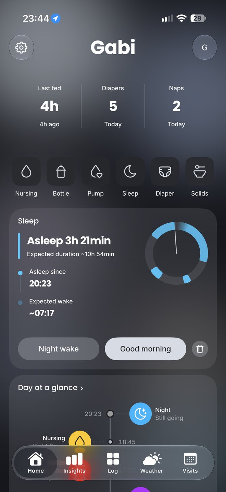

One tap, even half asleep.
Six buttons on Home, one tap each. No signal? It saves anyway and arrives later.
Sommeil, tétées et biberons, couches, repas et étapes dans un seul journal que toute la famille partage — assez rapide pour s’en servir les yeux à moitié fermés.
Un seul journal que toute la famille partage.



Six buttons on Home, one tap each. No signal? It saves anyway and arrives later.
When they last fed, the diapers and naps so far, and the whole day in order.
The expected wake, the next nap and bedtime, on one dial. With Kora Premium, from your baby’s own logs.
Chaque aliment goûté, coché. Une recette pour chaque âge.
L’autre parent, un grand-parent, la nounou — tout le monde voit la même journée, au moment où elle se passe.
Des graphiques calmes de ce que tu as noté, et son histoire, mois après mois.
Chaque page de Kora Baby, en trois groupes. Parcours-les.
Note hors ligne. Ça arrive plus tard.
Chacun en clair et en sombre.
Kora Baby enregistre ; elle n’interprète jamais un chiffre pour toi. Ce n’est pas un avis médical. Chaque étape a sa fenêtre : certains bébés prennent leur temps, d’autres sautent un stade — les deux sont ordinaires. L’histoire et les records font partie de Kora Premium. Météo fournie par Apple Weather.
Tout ce que tu notes est gratuit, et le relire jusqu’au premier jour aussi.
Kora Premium, gratuit, pour de bon — confirmé dans Kora Baby et rattaché au foyer. Pas une réservation par e-mail.
Hors de Suisse, 4.99 par mois ou 49.99 par an dans la devise de ton App Store.
Nous sommes maman et papa. Kora Baby est née comme une application pour notre famille. Nous voulions garder les petits détails de la journée de notre bébé au même endroit, pour les suivre ensemble avec les personnes qui s’en occupent.
Un seul journal que toute la famille partage.
Rejoins la liste d’attente